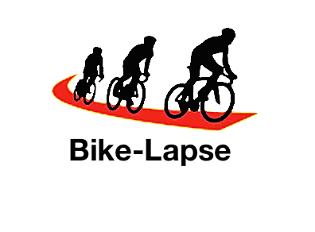

P&O project 'Quantified Bike' voor 2de bachelor ingenieurswetenschappen

Gemaakt door: Schrooten Bernd, Schryvers Andreas, Sels Shoera, Switsers Sander, Van den Berghe Pieter en Van Laere Nathan
Co-titularis: Professor Duval E.
Begeleiders: Charleer Sven, De Croon Robin, Klerkx Joris, Santos Jose Luis